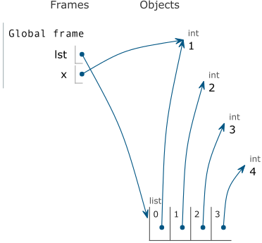
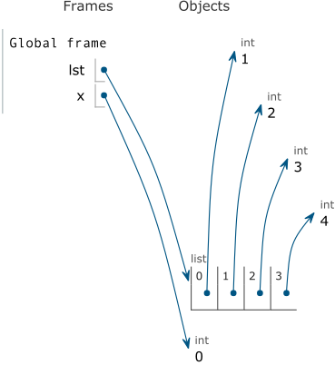

Foundations
This text covers the fundamental concepts in programming languages. While we will be using several languages, the purpose of the text is not to learn different languages. Instead, it is to learn the concepts that will both facilitate learning a new language quickly and make better use of the programming constructs that a programming language provides. To analogize with spoken languages, the subject of this text is more akin to linguistics rather than a specific language.
Topics that are covered in this text include programming-language features for naming, control flow, and memory management, basic theory of programming languages, such as grammars and type systems, and various programming paradigms including functional, object-oriented, and logic-programming techniques. We will also consider advanced programming techniques such as generic programming and code generation.
Introduction
There are no solutions; there are only trade-offs. — Thomas Sowell
A programming language is a language designed for expressing computer programs at a higher level than a machine language. While many programmers consider programming languages such as C to be more powerful than assembly, and higher-level languages such as C++ and Python to be more powerful than C, in reality, all languages can solve exactly the same problems. This perceived power differential is due to the set of abstractions each language provides, and to what degree a language facilitates programming in different paradigms and patterns.
There are countless programming languages in existence. A list of notable languages on Wikipedia enumerates over 700 languages. If all languages can solve the same problems, why are there so many languages?
{kind=link}
A language occupies a point in the space of tradeoffs between different design goals. These include ease of writing code, readability, performance, maintainability, portability, modularity, safety, and many other considerations. It is impossible to optimize for all these goals simultaneously. Instead, they must be balanced according to the intended use of a language.
A language may also be intended for a specific problem domain and therefore support target design goals and abstractions that are important to that domain. A concrete example is Fortran, which is suited to numerical computations by providing a multidimensional array abstraction with excellent performance.
Programming languages are often designed with a particular language paradigm in mind. One such paradigm is imperative programming, where a program is decomposed into explicit computational steps in the form of statements. Another general pattern is declarative programming, where computation is expressed in terms of what it should accomplish rather than how. More specific styles within this space include functional programming, which models computation after mathematical functions and avoids mutation, and logic programming, which expresses a program in the form of facts and rules. One last example is object-oriented programming, which organizes data into objects and computation into methods that are associated with those objects. These language paradigms are not mutually exclusive, and higher-level languages often support a combination of paradigms.
Languages also differ in the design of their type systems. Entities in a programming language are generally associated with a type, which determines what operations are valid on those entities and how to perform those operations. Two common methodologies are static typing, in which types are inferred directly from a program’s source code and checked at compile time, and dynamic typing, where types are tracked and checked at runtime. Often languages use a combination of these systems, such as with dynamic casting in C++.
A final consideration in designing and implementing a language is whether it is intended to be compiled or interpreted. In compilation, a program is transformed from its original code into a form that is more suited to direct execution on a particular system. This usually occurs separately from running the program, and the translation need only be done once for a program on a specific system. In contrast, interpreting code entails simulating its execution at runtime, which generally results in lower performance than compilation. However, interpreters can enable greater flexibility than compilers, since the original code is available and program state is more easily accessible. Modern languages often use a combination of compilation and interpretation.
A common aspect of these design areas is that they do not consist of discrete choices. Rather, they present a continuum between different canonical choices, and programming languages often fall somewhere along that continuum. When we say that a language, for instance, is statically typed, in actuality we mean that the predominant form of type checking is static, even though the language may have some elements of dynamic typing.
Basic Python
A language isn’t something you learn so much as something you join. — Arika Okrent
Python is a widely used programming language that supports many programming paradigms and has numerous libraries in a wide variety of application domains. We will use Python, along with other languages, to explore the design space of programming languages. While some systems come with a version of Python already installed, in this text, we will be using the most recent stable release of Python 3. Installation packages can be found on the downloads page of the Python website.
Python is an interpreted language, and a good way to gain familiarity
with Python is to start the interpreter and interact with it directly.
In order to start up the interpreter, you will need to go to your
command prompt and type python, python3 or python3.5
depending on how many versions are installed on your machine.
Depending on the operating system you are using, you might also have
to modify your PATH.
Starting the interpreter will bring up the >>> prompt, allowing you
to type code directly into the interpreter. When you press enter, the
Python interpreter will interpret the code you typed, or if the code is
syntactically incomplete, wait for more input. Upon evaluating an
expression, the interactive interpreter will display the evaluation
result, unless evaluation resulted in the special None value.
>>> 3 + 4
7
>>> abs(-2.1)
2.1
>>> None
Each session keeps a history of what you have typed. To access that
history, press <Control>-P (previous) and <Control>-N (next).
<Control>-D exits a session, which discards this history. Up and
down arrows also cycle through history on some systems.
Variables
Variables in Python do not have a static type. They are introduced by assigning a value to a name:
>>> x = 4
>>> x
4
Binding a variable to a value of one type does not preclude binding it to a value of a different type later on:
>>> x = 4
>>> x = 'hello'
>>> x
'hello'
>>> x = 4.1
>>> x
4.1
Multiple variables can be assigned to in a single statement using a comma to separate names on the left-hand side and values on the right-hand side:
>>> y, z = x + 1, x + 2
>>> y
5.1
>>> z
6.1
Basic Data Structures
Multiple assignment is actually an example of using a tuple, which is an immutable compound data type. In the context of programming languages, something is immutable if its state cannot be changed after it was first created. A tuple is constructed by separating values by commas, and then optionally surrounding the values with parentheses.
>>> a = (3, 4)
>>> a
(3, 4)
Individual elements of a tuple can be accessed with square brackets.
>>> a[0]
3
>>> a[1]
4
Negative indices access a container in reverse, with -1 corresponding to the last element:
>>> a[-1]
4
>>> a[-2]
3
Lists are mutable containers, and they are constructed using square brackets around the values.
>>> b = [5, 6]
>>> b
[5, 6]
Unlike tuples, list elements can be modified, and new elements can be appended to the end of a list:
>>> b[1] = 7
>>> b.append(8)
>>> b
[5, 7, 8]
The dir function can be used to inspect the full interface of the
list type:
>>> dir(list)
['__add__', '__class__', '__contains__', '__delattr__', '__delitem__',
'__delslice__', '__doc__', '__eq__', '__format__', '__ge__',
'__getattribute__', '__getitem__', '__getslice__', '__gt__',
'__hash__', '__iadd__', '__imul__', '__init__', '__iter__', '__le__',
'__len__', '__lt__', '__mul__', '__ne__', '__new__', '__reduce__',
'__reduce_ex__', '__repr__', '__reversed__', '__rmul__',
'__setattr__', '__setitem__', '__setslice__', '__sizeof__', '__str__',
'__subclasshook__', 'append', 'count', 'extend', 'index', 'insert',
'pop', 'remove', 'reverse', 'sort']
Documentation of a particular method can be retrieved with the
help function:
>>> help(list.append)
Help on method_descriptor:
append(...)
L.append(object) -- append object to end
A dict (short for dictionary) is an associative container that
maps a key to a value. It is created by enclosing key-value pairs
within curly braces.
>>> d = { 1 : 2, 'hello' : 'world' }
>>> d
{1: 2, 'hello': 'world'}
>>> d[1]
2
>>> d['hello']
'world'
Strings are denoted by either single or double quotes. A common convention is to use single quotes unless the string contains a single quote as one of its characters.
>>> 'hello world'
'hello world'
>>> "hello world"
'hello world'
Furthermore, A string can span multiple lines if it is enclosed in triple quotes. For example:
>>> x = """
... Hello
... World!
... """
>>> x
'\nHello\nWorld!\n'
Where \n is the newline character.
Compound Statements
In Python, a sequence of statements, also called a suite, consists of one or more statements preceded by the same indentation. Unlike other languages, such as C++, indentation is meaningful, and inconsistent indentation is a syntax error. Common convention in Python is to use four spaces per indentation level. Avoid using tabs, as they are not visually distinguishable from spaces but are considered distinct by the interpreter.
A conditional statement is composed of an if clause, zero or more
elif clauses, and an optional else clause:
if <expression>:
<suite>
elif <expression>:
<suite>
else:
<suite>
A suite must be indented further than its header, and each statement in the suite must have the same indentation. Each header must end with a colon. The conditional expression need not be parenthesized.
>>> if pow(2, 3) > 5:
print('greater than')
elif pow(2, 3) == 5:
print('equal')
else:
print('less than')
greater than
While loops have similar syntax:
while <expression>:
<suite>
For loops iterate over a sequence, similar to the range-based for loop in C++:
for <variable> in <sequence>:
<suite>
>>> for i in [3, 4, 5]:
print(i)
3
4
5
Function Definitions
A function is defined with the def statement:
def <function>(<arguments>):
<suite>
In keeping with Python’s lack of static typing, the return and argument types are not specified.
>>> def square(x):
return x * x
If a function does not explicitly return a value when it is called,
then it returns the special None value.
>>> def print_twice(s):
print(s)
print(s)
>>> x = print_twice(3)
3
3
>>> x
>>> print(x)
None
A def statement binds a function object to the given name. Unlike
in some other languages, this name can be rebound to something else.
>>> print_twice
<function print_twice at 0x103e0e488>
>>> print_twice = 2
>>> print_twice
2
>>> print_twice(3)
Traceback (most recent call last):
File "<stdin>", line 1, in <module>
TypeError: 'int' object is not callable
In Python, definitions are actually executed when they are encountered. For a function definition, this creates a new function object and binds it to the name specified in the definition.
Class Definitions
A class is defined with a class statement:
class <name>(<base classes>):
<suite>
The list of base classes can be elided, in which case the base class
is object.
When defining an instance method in Python, the definition explicitly
takes in self as the first parameter. When the method is called,
the receiving object is implicitly passed in to this first parameter.
>>> class Cat:
def speak(self):
print('meow')
>>> Cat().speak()
meow
The constructor is defined using the special __init__ method.
Member variables, more properly called attributes in Python, are
introduced using the self parameter and dot syntax.
>>> class Square:
def __init__(self, side_length):
self.side = side_length
def perimeter(self):
return 4 * self.side
def area(self):
return self.side * self.side
>>> s = Square(3)
>>> s.perimeter()
12
>>> s.area()
9
Modules
Python has a number of built-in libraries organized as modules,
and an individual .py file also represents a module. Modules
can be loaded using the import statement:
import <modules>
This binds module objects to their corresponding names in the current environment, which can then be used to access an attribute of a module.
>>> import operator, math
>>> math.pow(operator.mul(2, 3), 2)
36.0
Individual attributes of a module can also be introduced into the environment using another form of the import statement:
from <module> import <attributes>
>>> from math import pow
>>> pow(2, 3)
8
Another variant imports all names from a module:
from <module> import *
>>> from operator import *
>>> mul(2, 3)
6
Executing a Module
Python does not specify a special main function like the C family
of languages. Instead, all code in a module is interpreted when it
is loaded, starting from the top.
It is possible to specify a piece of code that does not run when a module is imported, but runs when a module is executed directly at the command-line, as in:
python3 program.py <arguments>
This is accomplished by checking if the __name__ attribute is
set to '__main__':
if __name__ == '__main__':
<suite>
The suite will only be executed if the module is executed on the command-line.
Command-line arguments can be obtained using the argv list in the
sys module. As in C and C++, the first argument is the name of the
program.
Python Reference Semantics
A variable in Python is actually an indirect reference to an object, rather than holding the object directly in the variable’s memory location. Thus, a Python variable is analogous to a C++ pointer, and assigning from one variable to another merely copies the indirect reference rather than copying the object. The following example illustrates this:
>>> x = []
>>> y = x
>>> y.append(3)
>>> x
[3]
The assignment y = x results in both x and y referring to
the same list object, so that the x reference reflects the
modification to the list that was made through the y reference.
Thus, an assignment does not make a copy of an object. To copy an
object, we can use the copy() function in the copy module (or
the deepcopy() function in the same module if we want a deep
rather than a shallow copy). Alternatively, many types can be copied
by invoking the constructor with an existing object, as in the
following:
>>> x = [3]
>>> y = list(x)
>>> y.append(-7)
>>> y
[3, -7]
>>> x
[3]
We will discuss reference semantics in more detail later.
Basic Elements
A programming language is a formal system for expressing computation. Any formal language, whether natural, mathematical, or programming, has rules that specify what sequences of symbols are meaningful in the language. We will see many of the rules that govern a programming language throughout this text, but we begin with the basic elements that comprise a program.
Levels of Description
A language, whether a spoken language or a programming language, can be described at multiple levels of abstraction, from how the most basic pieces of the language can be formed, to how they can be combined to construct meaningful phrases, to how those phrases can be used to accomplish a purpose. The following are the levels we consider when it comes to a programming language:
Grammar determines what phrases are correct. It can be further divided into lexical structure, which defines how the words of the language are constructed, and syntax, which determines what sequences of words form correct phrases.
Semantics specify the meaning of a correct phrase.
Pragmatics are concerned with the practical use of correct phrases. In programming languages, this includes common design patterns and programming practices.
An implementation determines how the actions specified by a meaningful phrase are accomplished. This level of description is unique to programming languages, which we use to write programs that perform actual tasks that need to be done.
We proceed to take a closer look at the first two levels of description. We will consider the latter two levels later.
Lexical Structure
The lexical structure of a language determines what constitutes the words that are in the language, more commonly called tokens in the context of programming languages. Valid characters are defined by the alphabet, generally ASCII or Unicode in a programming language, and tokens are composed of one or more consecutive characters. Tokens are often separated by whitespace, and a token also ends if it is followed by a character that is invalid for the token.
The classes of tokens depend on the particular language, but common classes are identifiers, keywords, literals, operators, and separators.
A literal represents a particular value directly in source code.
Literals include integer and floating-point numbers, booleans,
characters, and strings. Often a language provides different literal
representations for each primitive type. For example, C++ includes
int, long, and long long integer literals by using the
l and ll suffixes for the latter two. A language may also
support different representations for literals of a particular type,
such as decimal, hexadecimal, octal, and binary integer literals. Some
languages, such as C++11, even allow user-defined literals that can
represent arbitrary types.
Operators such as + and == are commonly defined as special
tokens. However, some languages such as Scheme do not treat operators
as special; instead, they are considered to be identifiers.
An identifier is a sequence of characters that can be used to name
entities in a program. In languages such as Python and C++, an
identifier begins with a letter or underscore and can subsequently
contain letters, underscores, and digits. Java allows identifiers to
contain the dollar sign ($) symbol, though general practice is to
reserve it for machine-generated names. Scheme allows many more
symbols to be part of an identifier. Most languages are case
sensitive in that capitalization is significant. However, some other
languages, such as Scheme, treat identifiers in a case-insensitive
manner.
A keyword is a sequence of characters that has the form of an
identifier but has special meaning in the language, such as the token
if in many languages. Depending on the language, a keyword can be
forbidden from being used as a name, or its meaning can be determined
based on context.
Separators, also called delimiters or punctuators, are the punctuation of a language, denoting the boundary between programmatic constructs or their components. Common separators include parentheses, curly braces, commas, and semicolons. In some cases, a token may act as a separator or as an operator depending on the context, such as a comma in C and C++.
The lexical structure of a language is usually specified using regular expressions, and breaking source code into tokens is often the first step in compiling or interpreting a program. The particulars of regular expressions will be discussed later on in this text.
Syntax
The syntax of a language specifies what sequences of tokens constitute valid fragments of the language. Syntax concerns only the structure of a program; source code may be syntactically correct but semantically invalid, resulting in an invalid program.
An example of a syntactic rule is that parentheses must be balanced within a code fragment. For example, the following code consists of valid tokens in C++ but is not syntactically valid:
x = (1 + ;
Another example of a syntax rule is that consecutive identifiers are generally illegal in Python or C++ (declarations being an exception in the latter).
The syntax rules of a language are specified using a formal grammar, a topic we will return to later in the text.
Semantics
Whereas syntax is concerned with the structure of code fragments, semantics determines the meaning of a code fragment. In particular, it indicates what value is computed or what action is taken by a code fragment.
Defining a programming language requires assigning semantics to each syntactic construct in the language. As we will see later, there are formal methods for describing the semantics of a construct. However, given the complexity of most languages and the fact that most programmers are not trained in formal semantics, semantics are often described using natural language.
Semantics further restrict what constitutes valid code. For example, the following is syntactically correct in C++ but semantically invalid:
int x = 3;
x.foo(); // invalid
Entities, Objects, and Variables
An entity, also called a citizen or object (though we use the latter term more specifically, as defined below), denotes something that can be named in a program. Examples include types, functions, data objects, and values.
A first-class entity is an entity that supports all operations generally available to other entities, such as being associated with a variable, passed as an argument, returned from a function, and created at runtime. The set of first-class entities differs between programming languages. For example, functions and types are first-class entities in Python, but not in C++ or Java. (Functions in C++ have many of the characteristics of first-class entities, but they cannot be created dynamically, so they are not quite first class.) Control of execution may also be a first-class entity, as we will see in Continuations. Table 1 summarizes the first-class entities in C++, Java, Python, and Scheme.
C++ |
Java |
Python |
Scheme |
|
|---|---|---|---|---|
Functions |
no (almost) |
no |
yes |
yes |
Types |
no |
no |
yes |
no |
Control |
no |
no |
no |
yes |
An object is a location in memory that holds a value. An object may be modifiable, in which case the value it holds may change, or it may be constant. A variable is a name paired with an object. In some languages, multiple names may be associated with the same object, in which case the names are said to alias the same object.
An object has a lifetime during which it is valid to use that object while a variable has a scope, which specifies the parts of a program that have access to that variable. An object also has a type that determines what its data represents and the operations that the object supports. We will examine these concepts in more detail later on.
L-Values and R-Values
An object actually has two values associated with it: its memory location and the contents of that memory location. The former is called an l-value while the latter is an r-value, after the fact that they are generally used on the left-hand side and right-hand side of an assignment, respectively. Most languages implicitly convert l-values to r-values when necessary.
As a concrete example, consider an integer variable x:
int x = 3;
The name x denotes a memory location that is initialized to hold
the value 3. When the name x is evaluated, the result is an
l-value. However, it is automatically converted to an r-value in the
following definition:
int y = x;
The initialization of the variable y requires an r-value, so x
is converted to its r-value 3. On the other hand, in the following
assignment, an l-value is required on the left-hand side:
x = 4;
The left-hand side evaluates to the memory location denoted by x
and changes its contents to the r-value 4.
Temporary objects, such as the result of x + 3, have r-values but
do not necessarily have l-values. Most languages do not allow access
to a temporary’s l-value even if it has one.
We will return to l-values and r-values when we discuss value and reference semantics.
Expressions
An expression is a syntactic construct that results in a value. An expression is evaluated to produce the resulting value.
The simplest expressions are literals, which evaluate to the value they represent, and identifiers, which evaluate to the l-value or r-value of the corresponding object, assuming that a variable is in scope that associates the identifier with an object.
Simple expressions can be combined to form compound expressions
according to the rules defined by a language. Combinators include
operators such as + or .. A function call is also generally a
compound expression, as in:
print("Hello", "world")
Depending on the language, the functor itself (print in the
example above) can be an expression. Each argument is also an
expression.
Operators have precedence rules that determine how subexpressions
are grouped when multiple operators are involved. For example, the
following expression typically evaluates to 7 in languages that have
infix operators, since * has higher precedence than +:
1 + 2 * 3
Infix languages generally allow subexpressions to be explicitly grouped using parentheses:
(1 + 2) * 3
An operator also has an associativity that determines how its operands group when there are multiple operators of the same precedence. Binary operators typically associate from left to right, while unary operators generally have right associativity. A notable exception are assignment operators in languages such as C++, which associate right to left. This allows expressions such as:
a = b = c = 0
This is equivalent to:
(a = (b = (c = 0)))
So the end result is that all of a, b, and c are assigned
the value 0.
In addition to defining how subexpressions are grouped together, the language must specify the order in which those subexpressions are evaluated. In many languages, such as Python and Java, subexpressions are generally evaluated in order from left to right. In Scheme, C, and C++, however, order of evaluation is left up to the implementation in many cases. Consider the following example in C++:
int x = 3;
cout << ++x << " " << x << endl;
With C++14 and earlier, this code can result in 4 3 or 4 4
being printed, depending on the implementation. C++17 modified the
order-of-evaluation rules such that this code always results in 4
4, though there are other cases were the order of evaluation is
still left to the implementation (e.g. the order in which arguments to
a function call are evaluated).
Statements
In addition to expressions, imperative programming languages also have statements, which specify some action to be carried out but do not produce a value. Thus, a statement is executed rather than evaluated. Statements usually modify the state of a program or the underlying system. These modifications are called side effects.
The syntax of a language determines what constitutes a statement. In the C family of languages, a simple statement is terminated by a semicolon, while in Python, a newline terminates a simple statement. The following are examples of simple statements in C++:
x + 1;
x = 3;
foo(1, 2, 3);
a[3] = 4;
return 2;
break;
goto some_label;
Languages also provide syntax for constructing compound statements out of simpler statements and expressions. In C-like languages, a block is a compound statement composed of a set of curly braces surrounding a suite of zero or more statements:
{
int x = 10;
int y = x + 3;
cout << x << " " << y << endl;
}
Conditionals and loops are also compound statements, whether they have a block or just an individual statement as a body.
Some languages make a distinction between statements, declarations, and definitions, since the latter two may not be executed at runtime. A declaration introduces a name into a program, as well as properties about the entity it refers to, such as whether it refers to a function or data and what its type is. A definition additionally specifies the data or code that the name refers to. In Java, every declaration is also a definition, so the two terms are often used interchangeably. In C and C++, however, a declaration need not be a definition, as in the following:
extern int x;
void foo(int x, int y, int z);
class SomeClass;
Python does not have declarations, and definitions are statements that are executed.
Names and Environments
Names are the most fundamental form of abstraction, providing a mechanism to refer to anything from simple data values, to complex sets of data and behavior in object-oriented programming, to entire libraries in the form of modules.
An important principle is that the scope of a name, or region in which the name maps to a particular entity, should have a restricted context. For example, if a name defined within the implementation of one function or module were to cause a conflict with a name defined in another function or module, abstraction would be violated, since implementation details affect outside code:
void foo() {
int x;
}
void bar() {
double x;
}
Here, even though the name x is repeated, each introduction of the
name x should have a context that is restricted to the individual
functions.
Scope is a feature of source code, and it determines what entity a name refers to within the source code. If the name refers to an object whose value is not known until runtime, then the program must defer part of the lookup process until runtime. The mapping of names to objects in each scope region is tracked in a data structure called a frame or activation record. The collective set of contexts active in a program is called the environment. A name is bound to an object in a frame or environment if the frame maps that name to the object.
Names that do not map to objects are generally not tracked in activation records. Instead, the compiler or interpreter can determine the entity that the name refers to from the source code itself. However, due to the strong connection between scope regions and frames, we often discuss the name-resolution process in the context of frames, even if the actual lookup process happens at compile time.
Though a name is used as an abstraction for an entity, the name itself is distinct from the entity it names. In particular, the same name can refer to different entities in different code contexts, as in the example above. A single entity may also have multiple names that refer to it, as in the following C++ code:
int main() {
int x = 3;
int &y = x;
y = 4;
cout << x; // prints 4
}
In this example, both x and y refer to the same object at
runtime, so they alias each other.
Similarly, the same name can refer to different objects in different runtime contexts:
int baz(int x) {
int y = x + 1;
return y;
}
int main() {
cout << baz(3) << endl;
cout << baz(4) << endl;
}
The names x and y defined in baz() refer to distinct pairs
of objects, with their own lifetimes, within the context of the two
separate calls to baz().
Every language defines a set of built-in names that are available to the programmer at program start. These include names for primitive types, built-in functions or modules, and pre-defined constants. A user can also introduce a name through a declaration or definition, as discussed in the previous section.
It is also important to note that names are not actually necessary to do computation. In fact, all programs could be written without names (as with Turing machines). Names, however, provide an abstraction that is easily used and incredibly useful for the programmer.
Blocks
Blocks are a fundamental unit of program organization common to most languages. A block is a section of program text that contains name bindings that are local to the block. Thus, a block corresponds to a frame in the environment.
Languages generally have two types of blocks: a block that corresponds to the body of a function, and an inline block that is not the body of a function but is nested in another block. Some languages, such as Python and Pascal, do not have inline blocks that contain their own bindings.
The syntax that introduces a block depends on the language, though a
common feature is separate syntax that indicates the beginning and end
of a block. For example, in the ALGOL family, a block starts with
begin and ends with end, while in the C family, left and right
braces indicate the start and end of a block. An interesting case is
the Lisp family, including Scheme, which has special let
constructs to introduce a frame:
(let ((x 3) (y 4))
(display (+ x y))
(display (- x y))
)
This code first binds x to 3 and y to 4 and then prints their
sum and difference. As we will see later, this is generally
implemented by translating the let into a function that has
parameters x and y:
((lambda (x y)
(display (+ x y))
(display (- x y))
) 3 4)
Here, lambda introduces an unnamed function, a concept we will
return to later. Thus, Lisp does not actually have inline blocks,
as any such blocks are really just function blocks.
Inline blocks are by definition nested inside other blocks, resulting in inner frames that are enclosed by outer frames. This means that the code inside the inner block exists in the context of multiple frames, and a well-defined lookup procedure is required to determine the meaning of a name.
Blocks associated with functions also result in nested frames, but there are complications that arise, so we will defer discussion of them until later.
Name Lookup
We first consider a general rule for how name lookup should proceed in
an environment with nested frames. Consider an environment that
consists of the frames (A (B (C))), with B nested inside of
A and C nested inside of B. This can result from code with
nested regions of scope, as in the following in C++:
int main(int argc, char **argv) { // frame A
int x = 3;
int y = -1;
if (argc > x) { // frame B
int y = stoi(argv[x]);
if (y > x) { // frame C
int x = argc;
int z = y - x; // which x and y?
cout << z;
}
}
}
What should the process be for looking up the name x in the
context of C? If the name x exists in only one of the active
frames A, B, or C, there is no possibility of ambiguity as
to which binding x refers to. On the other hand, if x is bound
in more than one frame, as in the example above, then a decision needs
to be made as to which binding it refers to. The standard rule is that
lookup prefers the innermost binding. Thus, since x is bound in
C, that binding is preferred even if though it is also bound in
A. On the other hand, y is not bound in C, so looking up
y in the context of C prefers the binding in B over the
one in A. Finally, looking up argc in C finds it in
neither C nor B, so the binding in A is used.
Thus, the standard lookup procedure is to search for a name in the innermost frame (or scope) and only proceed to the next one if the name is not found. This process is then recursively applied to that next frame (or scope). We often illustrate this process by drawing links between frames, as in Figure 2.
{kind=link}
Figure 2 An environment corresponding to a set of nested scopes.
A name is said to be overloaded if it refers to multiple entities in the same scope. A language that allows overloading must specify further rules on how the lookup process chooses between the applicable entities. For example, in the case of overloaded function names, the arguments of a function call can be compared to the parameter types of each overload to determine which one is the most appropriate:
void foo(int x);
int foo(const string &s);
int main() {
foo(3); // calls foo(int x)
foo("hello"); // calls foo(const string &s)
}
In some languages, name lookup takes into account how the name is used in order to disambiguate between entities defined in different scopes. For example, the following is valid Java code:
class SomeClass {
public static void main(String[] args) {
int main = 3;
main(null); // recursive call
}
}
Even though the name main is defined in the innermost scope to be
a variable of type int, its use in a function call causes the
compiler to look for a function named main, disregarding the
variable of the same name. A candidate function is found in the
enclosing scope, so that is what the name-lookup procedure produces.
Nested Inline Blocks
Now that we have a general rule for looking up names in nested frames, let us consider the environments that correspond to nested inline blocks. Each block corresponds to a frame, resulting in an environment with nested frames. The visibility rules of names within nested blocks thus match the general rule discussed above. A name introduced by a block is visible within a block nested inside of it, unless the nested block redefines the name. In this case, the former binding is hidden or shadowed by the latter.
Consider the following example in a C-like language:
{
int x = 0;
int y = 1;
{
int x = 2;
int z = 3;
}
}
The binding of x introduced by the outer block is not visible in
the inner block, since the inner block redefines the name x.
However, the binding of y is visible in the inner block, since
y is not redefined. Finally, the name z is only visible in the
inner block, since the outer block is not nested inside the inner.
Scope in Functions
Functions introduce an element of choice that is not present in inline blocks. An inline block is both textually nested inside an outer block, and its execution takes place during the execution of the outer block. On the other hand, the program text in which a function is defined is distinct from the context in which it is called. Consider the following code in a C-like language:
int x = 0;
void foo() {
print(x);
}
void bar() {
int x = 1;
foo();
}
The function foo() is textually located at top-level, or global,
scope. However, it is called from within the block associated with the
function bar(). So which x is visible within foo(), and
what value is printed?
Either binding of x, and therefore either the value of 0 or 1, is
a valid choice depending on the sequence of frames that make up the
environment in foo(). The two choices are known as static
(lexical) scope and dynamic scope, and they are illustrated in
Figure 3.
{kind=link}
Figure 3 Environment structure in static and dynamic scope.
Before considering each of the choices in more detail, let us define some terminology common to both schemes. The local environment of a function consists of the subset of the environment that is local to the function. This includes parameter names and all names defined in the context of the function body. The global environment consists of names defined at the top-level of a program, either at global or module scope depending on the language. Finally, the non-local environment of a function consists of those names that are visible from a function but are neither local to the function nor at global or module scope. It is in what constitutes the non-local environment that static and dynamic scope differ.
For both types, looking up a name follows the general rule we introduced above; the local environment is checked first, followed by the non-local environment, followed by the global environment.
Static Scope
In static or lexical scope, the environment at any point in a program can be deduced from the syntactic structure of the code, without considering how the computation evolves at runtime. In this scheme, the non-local environment of a function consists of those non-global bindings that are visible in the program text in which the function definition appears.
Considering the example above, the definition int x = 0 introduces
a binding of x into the global environment. The definition of
foo() is located in the context of the global frame, so it has no
non-local bindings. Therefore, the binding of x that is visible in
foo() is the one defined at global scope, so the value 0 is
printed.
A more interesting case of static scope arises in languages that allow the definition of functions inside other functions. This set of languages includes the Lisp family, Python, Pascal, and to a limited extent, newer versions of C++ and Java. Let’s consider a concrete example in Python:
x = 0
def foo():
x = 2
def baz():
print(x)
return baz
def bar():
x = 1
foo()() # call baz()
bar()
This program calls the function baz() that is defined locally in
the context of foo(), while the call itself is located in the
context of bar(). The global environment consists of the binding
of x to 0 at the top-level, as well as bindings of the names
foo and bar to their respective functions. There are no
bindings in the local environment of baz(). Static scoping
requires that the non-local environment of baz() be the
environment in which its definition textually appears, which is the
environment frame introduced by the function foo(). This frame
contains a binding of x to 2. Following our lookup procedure, the
value 2 is printed out since the non-local binding of x is the one
that is visible.
Figure 4 shows a visualization of the environment, as illustrated by Python Tutor.
{kind=link}
Figure 4 Illustration of environment using static scope.
Since function definitions are statements in Python that bind the
given name to a function object, they introduce bindings in the frame
in which the function is defined. Python Tutor visualizes the
non-local parent of a locally defined function by naming the parent
frame and annotating the function with the name of the parent frame,
as in [parent=f2]. If this is elided, then the parent frame is the
global frame. Thus, the non-local environment of the call to baz()
is the frame for the call to foo(), while the parent frame of the
latter is the global frame.
Note that the binding of x to 1 introduced by bar() does not
appear anywhere in the environment of baz(), since the definition
of baz() is not textually located inside of bar().
Most modern languages use static scope, since it tends to be more efficient than dynamic scope, as the lookup process can be facilitated by the compiler. Static scope also generally makes it easier for programmers to reason about the code, since they don’t have to trace through the execution in order to figure out what a name refers to.
Dynamic Scope
In dynamic scope, the environment at any point in a program is dependent on how execution evolves at runtime. The non-local environment of a function consists of those bindings that are visible at the time the function is called. This rule is applied recursively, so that a sequence of function calls results in a sequence of frames that are part of the non-local environment of the innermost function call.
As a concrete example, consider the following C-like code:
int x = 0, y = 1;
void foo() {
print(x);
print(y);
}
void bar() {
int x = 2;
foo();
}
int main() {
int y = 3;
bar();
return 0;
}
The global environment includes the bindings of x to 0 and y
to 1. When execution starts at main(), its environment consists of
the global frame and the local frame that it introduces that binds
y to 3. In the call to bar(), the environment of bar()
consists of the global frame, the non-local frame of main(), and
the local frame of bar(). Finally, in the call to foo(), the
environment of foo() consists of the global frame, the non-local
frame of main(), the non-local frame of bar(), and the local
frame of foo(). Name lookup starts in the innermost frame and
proceeds outward until it finds a binding for the name. A binding for
x is found in the frame of bar(), and for y in the frame
of main(), so that the values 2 and 3 are printed.
Dynamic scope can be simpler to implement than static, since the frames in an environment correspond exactly to the set of frames that are active during program execution. However, it can result in behavior that is less obvious from reading the code, as it requires tracing out the runtime execution of the code to understand what it does. As a result, few modern languages use dynamic scope.
Languages that allow functions themselves to be passed as arguments introduce a further complexity when it comes to dynamic scope in the form of binding policy. We will defer discussion of binding policy until we examine higher-order functions.
Point of Declaration or Definition
The rules we’ve described thus far do not fully specify name lookup and visibility in languages that allow names to be introduced in the middle of a block. In particular, does the scope of a name start at the beginning of the block in which it is introduced or at the point of introduction? Consider the following C-like code:
int foo() {
print(x);
int x = 3;
}
Is this code valid? The initialization of x occurs after the
print, so allowing code like this would result in undefined behavior.
The C family of languages avoids this problem by stating that the scope of a name begins at its point of declaration and ends at the end of the block in which the declaration appears. Thus, the code above would be a compile-time error. On the other hand, consider the following:
int x = 2;
int foo() {
print(x);
int x = 3;
}
Since the local binding of x is not in scope at the print call,
the global binding of x is visible and the value 2 is printed.
Python, however, does not follow this rule. If a name is defined within a function body, then its scope starts at the beginning of the body. However, it is illegal to reference the name before its initialization. Thus, the following code is erroneous:
x = 2
def foo():
print(x)
x = 3
foo()
This results in an error like the following:
UnboundLocalError: local variable 'x' referenced before assignment
Suppose the intent of the programmer in the code above was to modify
the binding of x in the global environment rather than to
introduce a new binding in the local frame. Python enables the
programmer to specify this intent with the global statement:
x = 2
def foo():
global x # specify that x refers to the global binding
print(x)
x = 3
foo()
print(x)
The code now prints out the value 2, modifies the global x to be
bound to 3, and prints out 3. A similar nonlocal statement is
available to specify that a name refers to a binding in the non-local
environment.
A final consideration is how to handle scope in the context of mutually recursive functions or classes. Consider the following code:
int foo(int x) {
return bar(x + 1);
}
int bar(int x) {
return foo(x - 1);
}
Ignoring the fact that the code does not terminate, the scope rules we
described for the C family do not permit this code, since bar()
is not in scope when foo() is defined. C and C++ get around this
problem by allowing incomplete declarations:
int foo(int x) {
int bar(int); // incomplete declaration of bar
return bar(x + 1);
}
int bar(int x) {
return foo(x - 1);
}
Java, on the other hand allows methods and classes to be used before they are declared, avoiding the need for incomplete declarations. Similarly, older versions of C allowed functions to be used before declaration, though this was prone to error due to how such uses were handled in the compiler and linker.
Implementation Strategies
A binding is an association between a name and an object, making an associative container such as a dictionary a natural abstraction for keeping track of bindings. A dictionary-based implementation strategy can represent each frame with its own dictionary, as well as a pointer to the next outer frame, if there is one. Adding bindings and looking up names can be done dynamically by inserting new entries into frames at runtime or searching through the list of frames for an entry that matches a given name.
Static languages often take a more efficient approach of translating a name to an offset in a frame at compile time. This strategy requires static scope so that names can be resolved to frames by the compiler. As an example, consider the following code written in a C-like syntax, but with nested function definitions:
int foo(int x) {
double y = x + 3.1;
double bar(double x) {
return x - y;
}
return bar;
}
foo(3)(4); // evaluates to -2.1
A compiler can examine the code in foo() to determine how much
space its activation record requires, factoring in parameters, local
variables, temporaries, and control data. It can then associate each
variable with a specific offset in the activation record, as in
Figure 5.
{kind=link}
Figure 5 An offset-based layout scheme associates fixed offsets with individual pieces of data.
The value of x in the scope of foo() is stored at offset zero
from the beginning of the activation record, while the value of y
is stored at offset four. In the activation record for bar(), its
parameter x is stored at offset zero, while a pointer to the
invocation’s next outer frame is stored at offset eight.
(Alternatively, a direct pointer to the memory location for y can
be stored, rather than a pointer to the activation record containing
y.) Figure 6 shows the actual activation
records created by the invocations foo(3)(4).
{kind=link}
Figure 6 Data stored using an offset-based layout.
When the compiler generates code for the body of bar(), the
reference to x is translated to an offset of zero into the
activation record for bar(), while the reference to y is
translated into first retrieving the outer frame pointer from offset
eight in the activation record for bar(), followed by an offset of
four in the outer frame. Thus, the values 4.0 and 6.1 are retrieved
for x and y, respectively, resulting in a difference of -2.1.
The offset-based implementation requires only a single memory access for a local variable, as opposed to a dictionary lookup in a dictionary-based implementation. For a local variable in the \(n\)th other frame, an offset-based strategy requires \(n\) memory accesses, while a dictionary-based scheme does \(n\) dictionary lookups. A memory access is likely to be much more efficient than a dictionary lookup, resulting in better performance for offset-based implementations.
Control Flow
We now turn our attention to the problem of managing the sequence of actions that take place in a program. Sequencing is of particular importance in imperative programming; in this paradigm, each programming construct specifies some action to be taken, and the flow of control between constructs is instrumental to the meaning of a program.
Expression Sequencing
As we saw in Expressions, the order in which subexpressions are evaluated is a consideration in the evaluation of a compound expression, though a well-defined order is most important in languages that allow expressions to have side effects. Here, we consider some cases in which the evaluation semantics are of particular importance.
Short Circuiting
Consider a conditional of the following form in C++:
if (x != 0 && foo(x)) {
...
}
If the order of evaluation of the operands to the && operator were
left up to the implementation, it would be legal to evaluate the call
to foo() on the right-hand side before the comparison with 0 on
the left-hand side. This is problematic in two cases. First, if
foo() requires that its argument is non-zero, such as in the case
that it uses the argument as a divisor, then its evaluation can lead
to a runtime error or, even worse, undefined behavior. Second, if
foo() performs a very expensive computation, then it would be
unnecessarily computed in the case that x is 0.
To address these problems, boolean operators in many languages evaluate their left-hand operand before the right-hand one and are also short circuiting. This means that the right-hand side is not computed if the overall value of the expression can be determined from the left-hand side alone. This is the case in conjunction (logical and) if the left-hand side evaluates to a false value, and in disjunction (logical or) if it evaluates to a true value.
A similar situation occurs with ternary conditional operators, such
as ?: in the C family:
int y = (x != 0 ? z / x : 0);
Here, if x is 0, the the second operand is not computed, and y
is set to 0. On the other hand, if x is not 0, then the second
operand is computed but not the third, so y is set to the value
obtained by dividing z by x.
Explicit Sequences
Some languages provide an explicit mechanism for chaining expressions in an ordered sequence. Generally, the result of the expression sequence as a whole is the result of the last expression in the sequence. In C and C++, the comma operator sequences expressions in this manner:
int x = (3, 4);
cout << x;
This prints out the value 4, since the expression 3, 4 evaluates
to 4. Similarly, in the Lisp family, the begin form chains
expressions together:
(begin (+ 1 3) (/ 4 2))
Compound Assignment
In the evaluation of compound-assignment operators, the number of times the left-hand side is evaluated can affect the result in the presence of side effects. In most languages with compound assignment, the following two operations are not equivalent in general:
x += 1
x = x + 1
The difference is that in the first case, the expression x is only
evaluated once, while in the second, it is evaluated twice. As a
concrete example of where the results differ, consider the following
Python code:
def foo(values):
values.append(0)
return values
mylist = []
foo(mylist)[0] += 1
This results in mylist being equal to [1]. On the other hand,
consider the following:
mylist = []
foo(mylist)[0] = foo(mylist)[0] + 1
Here, mylist ends up equal to [1, 0]. Thus, the two operations
are not equivalent.
Statement Sequences
Statements by their very nature generally have side effects, so their order of execution is of fundamental importance in imperative programming. Imperative languages generally specify that statements execute in the order in which they appear in the program text [1].
Sequences of statements are often grouped in the form of blocks, which can appear in contexts where a single statement is expected. Some languages, such as Python, restrict where a sequence of statements can appear, such as the body of a structured control statement. Python uses the term suite for such a sequence rather than block.
A language’s syntax specifies how statements are separated in a block or a sequence. Two common strategies are to use a separator character between each statement, or to require that all statements be terminated by a particular character. For example, if a semicolon is used to separate statements, a sequence of statements could have the following structure:
S_1; S_2; ... ; S_N
On the other hand, if a semicolon is used to terminate the statements, the sequence would have the following form:
S_1; S_2; ... ; S_N;
The key difference is that in the second case, the last statement would require a terminating semicolon.
Unstructured Transfer of Control
Many languages provide a simple mechanism for transferring control in the form of a goto. This is generally used in conjunction with a label that specifies which statement is to be executed next. For example, the following C code prints integers in sequence starting at 0:
int x = 0;
LOOP: printf("%d\n", x);
x++;
goto LOOP;
The code initializes x to 0 and proceeds to print it out. It then
increments x and transfers control back to the print statement.
Goto statements are a very low-level mechanism of control, usually mapping directly to a direct jump instruction in machine code. However, on their own, simple gotos are insufficient to implement most algorithms since they do not provide any branching. The example above is an infinite loop and also suffers from integer overflow, resulting in the values wrapping around. In some languages, variants of goto exist that do provide branching capability, such as computed goto in older versions of FORTRAN. Machine code often provides branching through the use of indirect jump instructions.
While the various forms of goto are very powerful, they are also open to abuse, resulting in incomprehensible spaghetti code that makes it difficult to follow the control flow in a program. Part of the problem is that this unstructured form of transferring control is not amenable to conventions for improving readability, such as indentation. In the example above, all statements occur at the same level, and it is not visually obvious where the loop is. This is even more of a problem when the goto is many lines away from the label that it references. And if a piece of code has many labels and many gotos, drawing out the set of possible paths through the code can result in a mess, resembling a plate of spaghetti.
Another problem with goto is how to handle the initialization or destruction of local variables when control passes into or out of a block. We will see more details about initialization and destruction shortly, but languages such as C++ with complicated initialization and destruction semantics often place restrictions on how goto can be used.
While goto is very powerful, it is not necessary for any algorithm. As a result, it is common practice to discourage the use of gotos, and some languages do not include it in their set of control constructs.
There are a few cases, however, where goto or a restricted version of it can result in simpler and more readable code. However, an example must wait until after we discuss structured control constructs.
Structured Control
Modern languages provide higher-level control constructs than goto, allowing code to be structured in a more readable and maintainable way. The most basic constructs are those for expressing conditional computation and repetition, two features required for a language to be Turing complete, meaning that the language is equivalent in computational power to Turing machines.
Conditionals
We have already seen the ternary conditional operator provided by some languages for conditional evaluation of expressions. Imperative languages provide an analogous construct for conditional execution of statements in the form of the if statement, which has the general form:
if <test> then <statement1> else <statement2>
Here, <test> is an expression that has a boolean value; depending
on the language, this expression may be required to be of the boolean
type, or the language may allow conversions of other types to a
boolean value. If the resulting value is true, then <statement1>
is executed. Otherwise, <statement2> is executed.
Often, languages allow the else branch to be elided:
if <test> then <statement>
However, this can lead to the dangling else problem. Consider the following example:
if <test1> then if <test2> then <statement1> else <statement2>
The grouping of the branches can be interpreted as either of the following:
if <test1> then (if <test2> then <statement1> else <statement2>)
if <test1> then (if <test2> then <statement1>) else <statement2>
Some languages resolve this ambiguity by specifying that an else
belongs to the closest if. Others formulate their syntax to avoid
this problem by explicitly indicating where a branch starts and ends.
Another common language feature is to provide a cascading form of
if. The following is an example in C:
if (<test1>) <statement1>
else if (<test2>) <statement2>
...
else if (<testN>) <statementN>
else <statementN+1>
As another example, Python also provides an equivalent form, but with
the keyword elif rather than else if.
A cascading if acts as a conditional with more than two branches.
Though it can always be rewritten as a sequence of nested if
statements, the cascaded form can improve readability by making it
visually clear what the disjoint branches are.
A similar, though often more restricted, form of multiple branching is provided by the case or switch statement. It has the following general form:
switch <expression>:
case <value1>: <statement1>
case <value2>: <statement2>
...
case <valueN>: <statementN>
default: <statementN+1>
The switch expression is evaluated, and then its value is compared
to those specified in the case branches. If the value matches one
of the branches, then that branch is executed. If the value does not
match the value in any case branch, then the default branch is
executed.
There are many variations in both the syntax and the exact semantics
of a switch statement. Usually, the values in the case
branches must be compile-time constants, restricting the set of types
that the switch expression may have. Some languages allow multiple
alternative values to be specified for a single case. Depending on
the language, execution of the case branches may be disjoint, or
execution from one branch “falls” into the next branch unless an
explicit break or goto is present. Often, the default
branch may be elided. In some languages, such as Swift, eliding the
default clause requires the combination of the case branches
to cover all possible values that can be provided to the switch.
Part of the motivation for providing separate if and switch
statements is that the latter often can be implemented more
efficiently. More importantly, however, is that the two constructs are
more suitable for different situations. The switch statement is
ideal for when execution can follow multiple discrete paths based on
the value of an expression that isn’t necessarily true or false, while
the if statement is appropriate if the flow of execution is
determined by a set of boolean conditions.
Loops
Loops are a common mechanism for repetition in imperative languages. They allow a programmer to specify that a computation should repeat either a certain number of times, or until some condition is met.
Some languages provide loop constructs that repeat for a bounded number of iterations determined at the beginning of the loop. Such a construct is actually insufficient to express all algorithms, so languages that only provide bounded iteration, without some other mechanism such as unbounded loops or gotos, are not Turing complete.
The most general form of unbounded iteration is the while loop:
while <expression> do <statement>
Such a loop tests the expression to see if it is true, and if so, executes the statement and repeats the process.
There are many variations on while loops. Some languages have a
form similar to:
do <statement> until <expression>
This repeatedly executes a statement until a condition is met. Another
variant is the do while loop:
do <statement> while <expression>
This is the same as do until, except that the control expression
is negated. In both forms, the statement is executed at least once,
while a standard while loop need not execute its body.
While the while loop and its variants are general enough to
express any form of repetition, it is common enough to iterate through
a sequence that languages often provide syntactic sugar to facilitate
the expression of such loops. The for loop in the C family of
languages is one example:
for (<initialization>; <test>; <update>) <statement>
This is, ignoring scope and lifetime details, mostly equivalent to:
<initialization>;
while (<test>) {
<statement>
<update>
}
Another, more abstract, type of loop is a foreach loop that iterates through the elements in a sequence, with the compiler inferring the initialization, test, and update. Such a loop may also be called a range-based for loop. The following is an example in C++11:
template <typename Container>
void print_all(const Container &values) {
for (auto i : values) {
cout << i << endl;
}
}
The function print_all() iterates through all the values in any
container that supports the iterator interface and prints out each
value. The Python for loop provides a similar abstraction.
Loop Termination
Normally, a loop terminates when the specified condition no longer holds, or in the case of foreach loops, when the elements of the sequence are exhausted. However, certain algorithms can be better expressed if a loop can be explicitly terminated in the middle of its execution. An example is the following C++ function that determines if a particular value is in an array:
bool contains(int *array, size_t size, int value) {
for (size_t i = 0; i < size; i++) {
if (array[i] == value) {
return true;
}
}
return false;
}
Once a value is found in the array, it is no longer necessary to examine the remaining elements of the array, so the function returns immediately rather than waiting for the loop to terminate normally.
For the cases where an early termination is desired without
immediately returning, a goto may be used in a language that
provides such a construct. For example:
bool found = false;
for (size_t i = 0; i < size; i++) {
if (array[i] == value) {
found = true;
goto end;
}
}
end: cout << "found? " << found << endl;
However, as it is considered desirable to avoid goto wherever
possible, many languages provide a restricted break statement that
explicitly exits a loop and proceeds to the next statement:
bool found = false;
for (size_t i = 0; i < size; i++) {
if (array[i] == value) {
found = true;
break;
}
}
cout << "found? " << found << endl;
A related construct is continue, which merely ends the current
loop iteration rather than exiting the loop entirely.
The simple break and continue statements suffice when a single
loop is involved. What if, on the other hand, we have nested loops,
such as the following:
for (...) {
for (...) {
if (...) break;
}
}
Which loop does the break statement terminate? As with dangling
else, generally the innermost loop is the one that is terminated. If
we wish to terminate the outer loop, however, we are forced to use a
goto in C and C++:
for (...) {
for (...) {
if (...) goto end;
}
}
end: ...
Java address this problem by allowing loops to be labeled and
providing forms of break and continue that take a label:
outer: for (...) {
for (...) {
if (...) break outer;
}
}
Some languages, such as Python, do not provide a specific mechanism for terminating or continuing an outer loop and require code to be refactored in such a case.
Exceptions
Exceptions provide a mechanism for implementing error handling in a structured manner. They allow the detection of errors to be separated from the task of recovering from an error, as it is often the case that the program location where an error occurs doesn’t have enough context to recover from it. Instead, an exception enables normal flow of execution to be stopped and control to be passed to a handler that can recover from the error.
In general, languages with exceptions provide:
A syntactic construct for specifying what region of code a set of error handlers covers.
Syntax for defining error handlers for a particular region of code and specifying the kinds of exceptions they handle.
A mechanism for throwing or raising an exception.
Some languages also provide a means for defining new kinds of
exceptions. For example, in Java, an exception must be a subtype of
Throwable, in Python, it must be a subtype of BaseException,
and in C++, it can be of any type
An exception may be thrown by the runtime while executing a built-in operation, such as dividing by zero. It may also be raised directly by the user, with syntax similar to the following:
throw Exception();
This consists of a keyword such as throw or raise indicating
that an exception is to be thrown, as well as the exception value to
be thrown. Some languages, such as Python, allow an exception class to
be specified instead of an instance.
The code that throws an exception may be in a different function than the code that handles it. Exception handlers are dynamically scoped, so that when an exception is raised, the closest set of active handlers on the dynamic call stack handles the exception. If that group of handlers does not handle exceptions of the type that was thrown, then the next set of handlers on the call stack is used. If the call stack is exhausted without finding an appropriate handler, execution terminates.
The following is an example in Python:
def average_input():
while True:
try:
data = input('Enter some values: ')
mean = average(list(map(float, data.split())))
except EOFError:
return
except ValueError:
print('Bad values, try again!')
else:
return mean
def average(values):
count = len(values)
if count == 0:
raise ValueError('Cannot compute average of no numbers')
return sum(values) / count
average_input()
The try statement indicates the block of code for which it defines
error handlers. If an exception is raised during execution of the
following suite, and that exception is not handled by a try
statement further down in the execution stack, then this try
statement attempts to handle the exception. The except headers and
their associated suites define the actual exception handlers,
indicating what kinds of exceptions they can handle. When an exception
is raised in the try suite, the type of the exception is compared
against the except clauses in sequence, and the first one that can
handle an exception of that type is executed. Thus, only one handler
is actually run. The else clause, if present, only executes if no
exception is raised in the try clause.
In this particular example, an exception may be raised by the built-in
float() constructor, if the user enters a value that does not
correspond to a float. In this case, a ValueError is raised,
and the second except clause is executed. If the user enters no
values, then average() will directly throw a ValueError. Since
the try statement in average_input() is the closest exception
handler on the execution stack, it is checked for an except clause
that handles ValueErrors, and the second clause runs. Another case
is if the input stream ends, in which case an EOFError is raised,
resulting in execution of the first except clause. Finally, if the
user enter one or more valid values, then no exception is raised, and
the else clause executes, returning the mean.
Python also allows a finally clause to be specified, with code
that should be executed whether or not an exception is raised.
Languages differ in whether they provide finally or else
clauses. For example, Java provides finally while C++ has neither.
Exceptions introduce new control paths in a program, and some
algorithms make use of them for things other than error handling. For
example, in Python, iterators raise a StopIteration exception when
the sequence of values they contain is exhausted. Built-in mechanisms
like for loops use such an exception to determine when the loop
should terminate.
Memory Management
Programs operate on data, which are stored in memory. In general, the set of data in use in a program can differ over time, and the amount of storage required by a program cannot be predicted at compile time. As a result, a language and its implementation must provide mechanisms for managing the memory use of a program.
As mentioned in Entities, Objects, and Variables, a data object has a lifetime, also called a storage duration, during which it is valid to use that object. Once an object’s lifetime has ended, its memory may be reclaimed for use by other objects. Languages differ from those in which the user is primarily responsible for managing memory to languages where the compiler (or interpreter) and runtime bear the sole responsibility of memory management.
In languages that allow a user to manually manage the memory of objects, many programming errors result from incorrectly managing memory. These errors include memory leaks, where a programmer neglects to release memory that is no longer needed, and dangling references, where an object is still accessible to a program even though the user has marked the object as dead. Errors relating to memory management can be particularly difficult to detect and debug, since the resulting behavior depends on the complex interplay between the program and the runtime storage manager and can be different in separate runs of the program.
There are several strategies that reduce the possibility of errors related to memory management. This usually involves moving the role of managing memory from the programmer to the language and its implementation. Specific examples include tying an object’s lifetime to the scope of a variable that references it, and to provide automatic memory management of objects that are not directly linked with variables.
Storage Duration Classes
Many languages make distinctions between the storage duration of different objects. This can based on the type of the object, where its corresponding variable is declared, or manually specified by a programmer. Common storage duration classes (using C++ terminology) include static, automatic, thread-local, and dynamic.
Static Storage
Variables declared at global scope can generally be accessed at any point in a program, so their corresponding objects must have a lifetime that spans the entire program. These objects are said to have static storage duration. In addition to global variables, static class member variables usually also have static storage duration in object-oriented languages. Some languages, such as C and C++, also allow a local variable to be declared with static storage duration, in which case the corresponding object is shared among all calls to the associated function.
Since the compiler or linker can determine the set of objects with static storage duration, such objects are often placed in a special region of memory at program start, and the memory is not reclaimed during execution. While the storage is pre-allocated, some languages allow the initialization of such objects to be deferred until their first use.
Automatic Storage
Objects associated with local variables often have automatic storage duration, meaning they are created at the start of the variable’s scope and destroyed upon final exit from the scope. As we saw in Blocks, in many languages, a block is associated with its own region of scope. Most languages create a new activation record or frame upon entry to a block to store the local objects declared in the block. This frame is usually destroyed when execution exits the block. It is not destroyed, however, when control enters a nested block or a function call, since control will return back to the block.
Many languages store activation records in a stack structure. When execution first enters a block, its activation record (or stack frame) is pushed onto the stack. If control passes to a nested block or called function, a stack frame corresponding to the new code is pushed on the stack, and execution passes to that code. When execution returns to the original block, the new stack frame is popped, and the activation record for the original block is again at the top of the stack. When this block completes, its activation record is popped off, and the local objects contained within are destroyed.
As we will see later, languages that implement full closures for nested function definitions cannot always discard a frame upon exit from a block, since a nested function may require access to the variables declared in that block. These languages do not place frames that may be needed later in a stack structure. Instead, they manage frames by detecting when they are no longer in use and reclaiming them.
Thread-Local Storage
Languages that include multithreading often allow variables to be declared with thread-local storage duration. The lifetime of their respective objects matches the duration of execution of a thread, so that a thread-local object is created at the start of a thread and destroyed at its end.
Since multiple threads execute concurrently, each thread needs its own stack for automatic objects and its own memory region for thread-local objects. These structures are created when a thread begins and are reclaimed when a thread ends.
Dynamic Storage
Objects whose lifetimes are not tied to execution of a specific piece
of code have dynamic storage duration. Such objects are usually
created explicitly by the programmer, such as by a call to a
memory-allocation routine like malloc() or through an
object-creation mechanism like new. While creation of dynamic
objects is usually an explicit operation, languages differ in whether
the programmer controls destruction of dynamic objects or whether the
runtime is responsible for managing their memory.
Languages with low-level memory-management routines such as
malloc() generally have a corresponding free() call that
releases the memory allocated by a call to malloc(). The user
is responsible for calling free() on an object when it is no
longer needed.
Some languages with explicit object-creation mechanisms such as
new provide an explicit means for object-destruction, such as
delete in C++. As with malloc() and free(), the programmer
is responsible for applying delete to an object when it is no
longer in use.
Other languages manage the destruction of objects automatically rather than relying on the programmer to do so. These languages implement garbage collection, which detects when objects are no longer in use and reclaims their memory. We will discuss garbage collection in more detail later in this text.
Since the lifetimes of dynamic objects are not tied to a particular scope and their destruction need not occur in an order corresponding to their construction, a stack-based management scheme is insufficient for dynamic objects. Instead, dynamic objects are usually placed in a memory region called the heap; the language implementation manages the storage resources in the heap. We will not discuss techniques for heap management here.
Value and Reference Semantics
Languages differ as to whether the storage for a variable is the same as the object it refers to, or whether a variable holds an indirect reference to an object. The first strategy is often called value semantics, and the second reference semantics.
To illustrate the distinction between value and reference semantics, we first examine the semantics of variables in C++. In C++, declaring a local variable creates an object on the stack, and the object has automatic storage duration. Within the scope of the variable, it always refers to the same object. Consider the following code:
int x = 3;
cout << &x << endl;
x = 4;
cout << &x << endl;
//Note: x's memory address does not change, even when its value does
The declaration of x creates an association between the name x
and a new object whose value is initialized to 3. Thereafter, as long
as x remains in scope, it always refers to that same object. The
assignment x = 4 copies the value from the right-hand side into
the object named by the left-hand side, but it does not change which
object x refers to. This can be seen by noting that the address of
x remains the same before and after the assignment. Thus,
the storage for the variable x is always the same as the object it
refers to. We therefore say that C++ has value semantics.
C++ also has a category of variables called references, which do not have the semantics of allocating memory when they are created. Instead, they share memory with an existing object. Consider the following:
int x = 3;
int &y = x;
//The following two lines will print the same memory address
cout << &x << endl;
cout << &y << endl;
y = 4;
cout << x << endl; //This prints 4
In this code, the declaration of x creates a new object and
initializes it to 3. The declaration of y as a reference does not
create a new object. Instead, y refers to the same memory as
x, as can be seen by examining their respective addresses.
Assigning to y changes the value stored in the memory that y
refers to, and subsequently examining x shows that its value also
changed, since it shares memory with y. Figure 7
is an illustration of what this looks like in memory.
{kind=link}
Figure 7 A reference in C++ refers to the same memory location as an existing object.
Finally, C++ has pointers, which are objects that store the address of another object. A pointer indirectly refers to another object, and dereferencing the pointer obtains the object it is referring to:
int x = 3;
int *y = &x;
*y = 4;
cout << x << endl;
This code creates a pointer that holds the address of x and then
dereferences it to change the value of the corresponding object.
Figure 8 illustrates this in memory.
{kind=link}
Figure 8 A pointer refers to an object indirectly by storing the address of that object.
Pointers refer to objects indirectly, so they provide a form of reference semantics. And since they refer to objects indirectly, it is possible to change which objects they refer to after creation:
int x = 3;
int y = 4;
int *z = &x;
z = &y;
*z = 5;
cout << x << ", " << y << endl;
In this code, the pointer z originally holds the address of x,
so it indirectly refers to the object associated with x. The value
of z is then modified to be the address of y, so z now
indirectly refers to the object associated with y. Dereferencing
z and modifying the resulting object now changes the value of
y instead of that of x. This ability to change which object a
pointer refers to is different than the direct association between
names and objects provided by normal C++ variables and references,
which cannot be broken while the name is in scope.
In a language with reference semantics, variables behave in the same manner as C++ pointers. In most cases, the variable is allocated on the stack but indirectly refers to a dynamic object located on the heap. Thus, the variable has storage that is distinct from the object it is referencing. This indirect reference can be represented by an address as in C++ pointers or through a similar mechanism, allowing the association between variables and the objects they reference to be changed.
As an example of reference semantics, consider the following Python code:
>>> x = []
>>> y = x
>>> id(x)
4546751752
>>> id(y)
4546751752
The variable x is bound to a new list, and then x is assigned
to y. The id() function returns a unique identifier for an
object, which is actually the address of the object in some
implementations. Calling id() on x and y show that they
refer to the same object. This differs from non-reference variables in
C++, which never refer to the same object while they are in scope.
Figure 9 is a representation of the Python program in
memory.
{kind=link}
Figure 9 In reference semantics, variables indirectly refer to objects on the heap.
Now consider the following additional lines of code:
>>> x = []
>>> id(x)
4546749256
>>> id(y)
4546751752
Assigning a new list to x changes which object x is bound to,
but it does not change which object y is bound to. This differs
from C++-style references, which cannot change what object they refer
to. Instead, the behavior is analogous to the following pseudocode
with C++-style pointers:
list *x = new list();
list *y = x;
x = new list();
cout << x << ", " << y << endl;
The result in memory is shown in Figure 10.
{kind=link}
Figure 10 In reference semantics, assigning to a variable changes which object it refers to rather than the value of the object itself.
The examples above illustrate the key difference between value and reference semantics: In value semantics, assignment to a variable changes the value of the object that the variable refers to. In reference semantics, however, assignment to a variable changes which object the variable refers to. The latter can be seen in the following Python example:
>>> lst = [1, 2, 3, 4]
>>> for x in lst:
x = 0
>>> lst
[1, 2, 3, 4]
The assignment to x in the loop changes which object x refers
to rather than the value of the object, as illustrated by Python
Tutor in Table 2.
 |
 |
The left side of Table 2 shows the
environment at the start of the first iteration, after x is bound
to an element of the list but before it is assigned to 0. Executing
the assignment results in the right-hand side, with x rebound but
the list element unaffected. Thus, none of the values in the list are
modified.
As can be seen from the previous examples, C++ has value semantics
while Python has reference semantics. Java, on the other hand, has
value semantics for primitive types but reference semantics for
Object and its subclasses, which are often called object types
or reference types.
RAII and Scope-Based Resource Management
Programs often make use of complex data abstractions whose
implementations allocate memory for their own internal use. An example
is a growable array, such as the vector template in C++ or the
list type in Python. These data structures use a contiguous piece
of memory to store elements. When a structure runs out of space, it
must allocate a new region of memory, copy (or move) over the
elements, and release the old memory region. This operation is hidden
behind the abstraction barrier of the data structure, and the growable
array’s implementation handles its own memory management.
For languages with garbage collection, an object that internally allocates memory does not pose any problems in most cases. If the object is no longer in use, the garbage collector can usually detect that the memory it allocated is also no longer in use. In languages without garbage collection, however, other mechanisms must be used in order to manage internal resources.
A simple solution is for the interface of a data structure to include
a function that must be explicitly called when the structure is no
longer needed, with a name along the lines of close(),
release(), or destroy(). This is called the dispose pattern,
and it is well-suited to languages where it is idiomatic to deallocate
objects by calling a function such as free(); since the user must
explicitly call free(), calling another function to release the
object’s internal resources does not break the pattern of explicit
memory management. The following is an example of how this pattern
could be provided for a data type in C:
typedef struct { ... } vector;
void vector_init(vector *);
void vector_destroy(vector *);
The user would be responsible for calling vector_init() after
malloc() and vector_destroy() before free():
vector *v = malloc(sizeof vector);
vector_init(v);
... // use the vector
vector_destroy(v);
free(v);
In some object-oriented languages, this style of resource management is directly integrated in the form of destructors. A destructor is a special method that is responsible for releasing the internal resources of an object, and the language ensures that an object’s destructor is called just before the object is reclaimed. Destructors are the analogue of constructors: a constructor is called when an object is being initialized, while a destructor is called when an object is being destroyed.
The semantics of constructors and destructors give rise to a general pattern known as resource acquisition is initialization, or RAII. This ties the management of a resource to the lifetime of an object that acts as the resource manager, so perhaps a better name for this scheme is lifetime-based resource management. In the growable array example above, the constructor allocates the initial memory to be used by the array. If the array grows beyond its current capacity, a larger memory area is allocated and the previous one released. The destructor then ensures that the last piece of allocated memory is released. Since the constructor is always called when the growable array is created and the destructor when it is destroyed, the management of its internal memory is not visible to the user.
The RAII pattern can be used to manage resources other than memory.
For example, an fstream object in C++ manages a file handle, which
is a limited resource on most operating systems. The fstream
constructor allocates a file handle and its destructor releases it,
ensuring that the lifetime of the file handle is tied to that of the
fstream object itself. A similar strategy can be used in a
multithreaded program to tie the acquisition and release of a lock to
the lifetime of an object.
When a resource manager is allocated with automatic storage duration, its lifetime matches the scope of its corresponding local variable. Thus, RAII is also known as scope-based resource management. However, RAII can also be used with dynamic objects in languages that are not garbage collected. We will see shortly why RAII does not work well with garbage collection.
Since the specific mechanism of RAII is unsuitable for general
resource management in garbage-collected languages, some languages
provide a specific construct for scope-based resource management.
For example, Python has a with construct that works with
context managers, which implement __enter__() and
__exit__() methods:
with open('some_file') as f:
<suite>
The open() function returns a file object, which defines the
__enter__() and __exit__() methods that acquire and release a
file handle. The with construct ensures that __enter__() is
called before the suite is executed and __exit__() is called
after the suite has executed. Python ensures that this is the case
even if the suite exits early due to an exception or return.
Newer versions of Java provide a variant of try that enables
scope-based resource management. Java also has a synchronized
construct that specifically manages the acquisition and release of
locks.
Garbage Collection
To avoid the prevalence of memory errors in languages that rely on programmers to manage memory, some languages provide automatic memory management in the form of garbage collection. This involves the use of runtime mechanisms to detect that objects are no longer in use and reclaim their associated memory. While a full treatment is beyond the scope of this text, we briefly discuss two major schemes for garbage collection: reference counting and tracing collection.
Reference Counting
Reference counting is a pattern of memory management where each object has a count of the number of references to the object. This count is incremented when a new reference to the object is created, and it is decremented when a reference is destroyed or modified to refer to a different object. As an example, consider the following Python code:
def foo():
a = object() # object A
b = a
b = object() # object B
a = None
return
A reference-counting implementation of Python, such as CPython, keeps
track of the number of references to each object. Upon a call to
foo() and the initialization of a, the object A has a
reference count of 1. The assignment of a to b causes the
reference count of A to be incremented to 2. Assigning the new
object B to b causes the count of A to be decremented and
the count of B to be 1. Assigning None to a reduces the
count of A to 0. At this point, the program no longer has any way
to access the object A, so it can be reclaimed. Finally, returning
from foo() destroys the variable b, so the count of B
reduces to 0, and B can also be reclaimed.
Reference counting makes operations such as assignment and parameter passing more expensive, degrading overall performance. As a result, many language implementations use tracing schemes instead. However, reference counting has the advantage of providing predictable performance, making it well-suited to environments where the unpredictable nature of tracing collection can be problematic, such as real-time systems.
Some languages that are not garbage collected provide a mechanism for
making use of reference counting in the form of smart pointers. In
C++, the shared_ptr template is an abstraction of a
reference-counting pointer. When a shared_ptr is created, the
referenced object’s count is incremented, and when the shared_ptr
is destroyed, the count is decremented. The referenced object is
destroyed when the count reaches 0. More details on shared_ptr and
other C++ smart pointers such as unique_ptr and weak_ptr can
be found in a handout from EECS 381.
A weakness of reference counting is that it cannot on its own detect when circular object chains are no longer in use. A simple example is a doubly linked list with multiple nodes, where each node holds a reference to its successor and predecessor, as shown in Figure 11.
{kind=link}
Figure 11 The nodes in a doubly linked list hold circular references to each other.
Even if the first node is no longer accessible from program code after destruction of the list object on the left, the node still has a reference count of one since the second node holds a reference to the first. This prevents a reference-counting algorithm from reclaiming the nodes.
One solution is to provide weak references, which hold a reference to an object without incrementing the object’s reference count. In the case of a doubly linked list, the reverse links can be represented using weak references so that they do not affect the reference counts of predecessor nodes.
{kind=link}
Figure 12 Weak references can be used to refer to the previous node, to avoid incrementing a node’s reference count.
The weak references in Figure 12 are shown as dashed lines. Now if the list object is reclaimed, the first node will no longer have any non-weak references to it, so its reference count will be zero. Thus, the first node will be reclaimed, which will then cause the second node’s count to reach zero, allowing it to be reclaimed in turn, and so on.
Weak references must be used carefully to ensure that cyclic data structures can be collected. This places a burden on the programmer, requiring more effort than the tracing schemes below.
Tracing Collectors
More common than reference counting is tracing garbage collection, which periodically traces out the set of objects in use and collects objects that are not reachable from program code. These collectors start out with a root set of objects, generally consisting of the objects on the stack and those in static or thread-local storage. They then recursively follow the references inside those objects, and the objects encountered are considered live. Objects that are not encountered in this process are reclaimed. For example, if the root set consists of objects \(A\) and \(H\) in the object graph in Figure 13, then objects \(A\) through \(K\) would be alive while objects \(L\) through \(O\) would be garbage.
{kind=link}
Figure 13 Tracing garbage collectors trace references starting at a root set, and objects that are not reachable from the root set are reclaimed.
There are many variants of tracing collectors. A common pattern is mark and sweep, which is split into separate mark and sweep phases. Objects are first recursively marked starting from the root set, and when this completes, unmarked objects are collected. Another pattern is stop and copy, which copies live objects to a separate, contiguous region of memory as they are encountered. The latter is slower and requires more free space but results in better locality of live objects. It also reduces the problem of memory fragmentation, where there is sufficient total free space to allocate an object, but each individual free region of space is too small for the object. However, since objects are moved, it also requires references and pointers to such objects to be updated, and the runtime must be able to distinguish references and pointers from other data values.
Tracing collectors often only run when free space is running low, so many programs do not even trigger garbage collection. Even in programs that do require collection, the amortized cost of tracing collection is often lower than that of reference counting. On the other hand, the collection process itself can take a significant amount of time, and it can be problematic if a collection is triggered immediately before an event that the program needs to respond to, such as user input.
Finalizers
Garbage-collected languages often allow finalizers to be defined, which are analogous to destructors in a language such as C++. A finalizer is called when an object is being collected, allowing it to release internal resources in the same manner as destructors. However, finalizers give rise to a number of issues that do not occur in destructors. First, a finalizer may not be called in a timely manner, particularly in implementations that use a tracing collector, since such a collector often only collects objects when memory resources are running low. This makes finalizers unsuitable for managing resources that can be exhausted before memory is. Second, a finalizer may leak a reference to the object being collected, resurrecting it from the dead. A collector must be able to handle this case, and this also leads to the question of whether or not a finalizer should be rerun when the resurrected object is collected again. Another issue with finalizers is that they do not run in a well-defined order with respect to each other, preventing them from being used where the release of resources must be done in a specific order. Finally, many languages do not guarantee that finalizers will be called, particularly on program termination, so programmers cannot rely on them.
For the reasons above and several others, programmers are often discouraged from using finalizers for resource management. Instead, a scope-based mechanism such as the ones discussed previously should be used when available.
Grammars
The grammar of a language specifies what sequences of character constitute valid fragments of the language. Grammar is only concerned with the structure of fragments, rather than the meaning. As in Levels of Description, the lexical structure of a language determines what the valid tokens are, and the syntax determines what sequences of tokens are valid. Here, we consider tools for specifying the lexical structure and syntax of a language.
Regular Expressions
The lexical structure of a language is often specified with regular expressions. A regular expression is a sequence of characters that defines a pattern against which strings can be matched.
The fundamental components of a regular expression are the following:
the empty string, usually denoted by the Greek letter epsilon: \(\varepsilon\)
individual characters from the alphabet of a language, such as a or b in the English alphabet
concatenation, often denoted by listing a sequence of components, such as ab
alternation, representing a choice between two options, often denoted by a vertical pipe, as in a|b
repetition with the Kleene star, representing zero or more occurrences of a component, such as in a*
Parentheses can be used to disambiguate application of concatenation, alternation, and the Kleene star. When parentheses are elided, the Kleene star has highest priority, followed by concatenation, followed by alternation.
The following are examples of regular expressions, as well as the strings they match:
\(a|b\) — matches exactly the strings a and b
\(a^*b\) — matches the strings containing any number of a‘s followed by a single b, i.e. b, ab, aab, aaab, …
\((a|b)^*\) — matches any string that contains no characters other than a or b, including the empty string, i.e. \(\varepsilon\), a, b, aa, ab, ba, bb, aaa, …
\(ab^*(c|\varepsilon)\) — matches strings that contain a single a, followed by any number of b‘s, followed by an optional c, i.e. a, ac, ab, abc, abb, abbc, …
Many regular expression systems provide shorthands for common cases. For example, the question mark ? is often used to denote zero or one occurrence of an element, so that the last example above could be written as \(ab^*c\)?. Similarly, the plus sign + usually indicates one or more occurrences of an element, so that \(a^+b\) matches the strings ab, aab, aaab, … Other common extensions include a mechanism for specifying a range of characters, shorthand for a set of characters as well the negation of a set of characters, and escape sequences, such as for whitespace.
As an example, the following regular expression matches an identifier or keyword in C++:
[a-zA-Z_][a-zA-Z_0-9]*
In this particular notation, square brackets denote a set of characters, acting as shorthand for alternation. A dash specifies a range of characters, so a-z denotes all the ASCII characters between a and z, inclusive. Thus, the regular expression matches any string that begins with a letter or underscore and follows that with any number of letters, underscores, or digits.
{kind=link}
Regular expressions are a very powerful mechanism in searching for and matching patterns. However, they are too limited to specify many common syntax rules. For example, there is no way to write a regular expression to match strings of the form \(a^nb^n\), strings that contain any number of a‘s followed by the same number of b‘s, such as \(\varepsilon\), ab, aabb, aaabbb, aaaabbbb, … This is an even simpler set of strings than that corresponding to matching sets of parentheses, which include strings such as ()() and (()(())), that are common to many languages.
Context-Free Grammars
While the lexical structure of a language is often specified using regular expressions, the syntactic structure is generally specified with a context-free grammar (CFG). A context-free grammar consists of a set of variables, a set of terminals, and a collection of production rules that specify how variables can be replaced with other variables or terminals. The start variable is the variable that should be used to begin the replacement process. Variables are replaced until no more variables remain, leaving just a sequence of terminals.
As a first example, consider the set of strings containing any number of a‘s followed by the same number of b‘s. We can specify a CFG that matches this set of strings. The terminals consist of the empty string \(\varepsilon\), a, and b. We need a single variable, which we will call S, that will also be the start variable. Then the replacement rules are:
To match a particular string, such as aabb, we begin with the start variable S and recursively apply production rules until we are left with just terminals that match the string. The following series of applications leads to the target string:
The sequence of applications above is called a derivation, and it demonstrates that the string aabb is matched by the CFG above.
As another example, the following CFG defines the set of strings consisting of matching parentheses, where P is the start variable:
We can derive the string (()) as follows:
We can derive the string ()() as follows:
An alternate derivation is as follows:
Other derivations exist as well. However, the derivations have the same fundamental structure, which we can see by drawing a derivation tree that represents the recursive application of rules in a tree structure. The first derivation above has the structure in Figure 15.
{kind=link}
Figure 15 A derivation of ()() that derives the left set of parentheses first.
The second derivation constructs the same structure in a different order, as shown in Figure 16.
{kind=link}
Figure 16 A derivation of ()() that derives the right set of parentheses first.
The leaves of a derivation tree are terminals, and the in-order traversal is the string that is matched. In both derivations above, both the in-order traversal as well as the structure of the tree are the same.
Let us consider another grammar, representing arithmetic operations over symbols a and b:
This CFG has the terminals +, *, a, and b, and the variable E, which is also the start variable. Consider the string a + b * a. We can derive it as follows:
Alternatively, we can derive the string as follows:
The derivation trees corresponding to the two derivations are in Figure 17, with the left tree as the result of the first derivation and the right tree the second.
{kind=link}
Figure 17 The string a + b * a can be derived with two different resulting structures, so the grammar is ambiguous.
While both derivation trees have the same in-order traversal, they have a fundamentally different structure. In fact, the first tree corresponds to the * operator having higher precedence than +, while the second tree is the reverse. Since the CFG admits both derivations, it is ambiguous.
We can rewrite the CFG to unambiguously give * the higher precedence, but doing so is cumbersome, particularly when a language has many operators. Instead, languages often resolve ambiguities by specifying precedence rules that determine which production rule to apply when there is a choice of rules that can lead to ambiguity.
Grammars in Programming Languages
The syntax of a programming language is usually specified using a context-free grammar. In some languages, the lexical structure is also specified with a CFG, as every regular expression can be written as a CFG. In languages that specify the lexical structure with regular expressions, the terminals of their grammars consist of program tokens. On the other hand, in those that specify the lexical structure with a CFG, the terminals are individual characters.
A language’s context-free grammar is often written in extended Backus-Naur form, which adds convenient shorthands to the basic form discussed above. In particular, many grammars use notation from regular expressions, such as alternation and Kleene stars, and the right arrow specifying a production rule is often replaced with an ASCII character such as = or :.
As an example, the following is a grammar specifying keywords, boolean
literals, and identifiers in a C-like language, with identifiers
taking the form of the regular expression [a-zA-z_][a-zA-Z_0-9]*:
Identifier: except Keyword and BooleanLiteral
IdentifierStartCharacter
IdentifierStartCharacter IdentifierCharacters
IdentifierStartCharacter:
_
LowerCaseLetter
UpperCaseLetter
IdentifierCharacters:
IdentifierCharacter
IdentifierCharacters IdentifierCharacter
IdentifierCharacter:
IdentifierStartCharacter
Digit
LowerCaseLetter: one of
a b c d e f g h i j k l m n o p q r s t u v w x y z
UpperCaseLetter: one of
A B C D E F G H I J K L M N O P Q R S T U V W X Y Z
Digit: one of
0 1 2 3 4 5 6 7 8 9
Keyword: one of
if else while struct break continue return
BooleanLiteral: one of
true false
The grammar here follows the convention used in the Java language specification. In particular, it uses a colon rather than a right arrow to specify a production rule, and alternation is specified by placing the different choices on different lines. Finally, it includes shorthand such as “except” and “one of” to simplify the structure of the grammar.
Here is the Java specification for a C-style comment:
TraditionalComment:
/ * CommentTail
CommentTail:
* CommentTailStar
NotStar CommentTail
CommentTailStar:
/
* CommentTailStar
NotStarNotSlash CommentTail
NotStar:
InputCharacter but not *
LineTerminator
NotStarNotSlash:
InputCharacter but not * or /
LineTerminator
This grammar takes care to ensure that a */ sequence terminates a comment, even if it immediately follows other stars, but that a single star or slash does not do so.
The following is a subset of the Scheme grammar specifying the form of a list:
Here, the grammar uses the pipe | to denote alternation. Thus, a list can take the form of zero or more items enclosed by parentheses, as in the following examples:
()
(+)
(define x 3)
A list can also be a dotted list, with one or more items followed by a period followed by another item, all enclosed by parentheses. This produces a list that is terminated by the last item rather than by an empty list. Here are some examples:
(1 . 2)
(a b . c)
(a . (list))
Finally, a list can take the form of a quotation marker followed by an item:
'hello
`world
,foo
,@bar
These combinations are syntactic sugar for lists representing quotation forms:
(quote hello)
(quasiquote world)
(unquote foo)
(unquote-splicing bar)
Vexing Parse
In a particularly complex language such as C++, ambiguity cannot be avoided in the grammar itself. Instead, external rules have to be specified for resolving ambiguity. These rules can be based on context that is impossible to capture in a context-free grammar. For example, in C++, whether or not a name refers to a type is used in disambiguation, and C++ prefers to disambiguate in favor of a declaration wherever possible. Coupled with the fact that C++ allows names to be parenthesized even in declarations, this leads to a class of vexing parses.
Consider the following example:
struct foo {
foo() {
cout << "foo::foo()" << endl;
}
foo(int x) {
cout << "foo::foo(" << x << ")" << endl;
}
void operator=(int x) {
cout << "foo::operator=(" << x << ")" << endl;
}
};
int a = 3;
int b = 4;
int main() {
foo(a);
foo(b) = 3;
}
The two lines in main() are interpreted as declarations, not as a
call to the constructor in the first line or a call to the constructor
followed by the assignment operator in the second. Instead, the code
is equivalent to:
int main() {
foo a;
foo b = 3;
}
A perhaps more vexing case results from the fact that C++ allows parameter names to be elided in a function declaration, and the elided name can be parenthesized. The following is an example of a function declaration with an elided parameter name:
void func(int);
Parenthesizing the elided name results in:
void func(int());
Now consider the following class:
struct bar {
bar(foo f) {
cout << "bar::bar(foo)" << endl;
}
};
Then the following line is ambiguous:
bar c(foo());
This can be the declaration of an object c of type bar, with a
newly created foo object passed to the constructor. On the other
hand, it can be the declaration of a function c, with return type
bar, that takes in an unnamed parameter of type foo. In this
case, the elided name is parenthesized. The C++ standard requires such
a situation to be disambiguated in favor of a function declaration,
resulting in the latter.
The disambiguation above is often referred to as the most vexing parse, and many compilers produce a warning when they encounter it. For example, Clang reports the following message on the code above:
foo.cpp:29:8: warning: parentheses were disambiguated as a function
declaration
[-Wvexing-parse]
bar c(foo());
^~~~~~~
foo.cpp:29:9: note: add a pair of parentheses to declare a variable
bar c(foo());
^
( )
The extra pair of parentheses force the compiler to treat foo() as
an expression, resulting in an object declaration rather than a
function declaration.